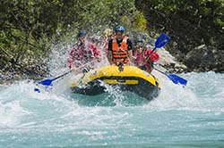
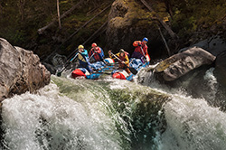
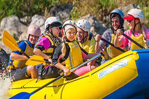

Enjoy a Trip
CONTACT USColorado River
Grade 5 White Water Rafting
Considered one of the best one day white water trips in the world, no safari to Colorado would be complete without truly experiencing the Colorado from its source. With a commitment to safety, quality and value for money, Colorado's River Explorers focus on providing our clients with an all inclusive experience of the Colorado. We take a personal interest in every detail of your day to ensure your time with us is simply unforgettable.
Includes
Colorado’s most experienced & qualified river crew. Tea, juice & breakfast Drinking water on the river. Snacks during the trip. Assorted beers & sodas, with wraps at the end of the day. FREE photos. FREE slide. All the latest equipment. Extensive safety briefing & practice drills. Safety raft and kayakers with every trip
Departure Schedule
Explorers River Camp 09:00hrs. Jinja Town 09:30 - 09:45hrs. Pick-ups from other hotels in Jinja available on request
 BOOK NOWBear River
Grade 3 White Water Rafting
Warm water, safe pools to swim, islands full of birds and fisherman in dugouts combine with fun and white water adventure to make this the perfect family and friends day out on the Bear. Bear River Explorers is the only company that starts your day with a 40 metre water slide into the Bear. The grade 3 rapids are fun without being overwhelming so there’s plenty of white water action, but also time to sit back, relax and enjoy your surrounds and have the occasional water fight.
Includes
Colorado’s most experienced & qualified river crew. Tea, juice & breakfast. Drinking water on the river. Snacks during the trip. Assorted beers & sodas, with wraps at the end of the day. FREE photos. FREE slide. All the latest equipment. Extensive safety briefing & practice drills. Safety raft and kayakers with every trip
Departure Schedule
Explorers River Camp 09:00hrs. Jinja Town 09:30 - 09:45hrs. Pick-ups from other hotels in Jinja available on request
 BOOK NOWBoise River
Family Float
This two hour family float is the perfect adventure for small kids. With a minimum age of 4, and plenty of opportunity to splash in the waters of the Boise, this trip provides a wonderful morning adventure for families. This trip is a great experience for younger families and grandparents alike. For those who wish, there is plenty of places for the kids to swim, always under the watchful eyes of our safety kayakers.
Includes
Colorado’s most experienced & qualified river crew. Cold drinks at the end of the trip. Free use of our water slide (6 years & above). Safety kayakers with every trip
Departure Schedule
Between 09:00 & 15:00
 BOOK NOW| TRIP | DURATION | DRESS | FITNESS LEVEL | RATES |
|---|---|---|---|---|
| Colorado River | 20 km • 6 - 7 hours on the river | Light clothing, shorts & t-shirt are ideal. • Lots of suntan lotion & a cap | 16 years minimum. • Clients should be water confident and reasonably fit. | USD$ 180 pp |
| Bear River | 15 km • 4 - 5 hours on the river | Light clothing, shorts & t-shirt are ideal. • Lots of suntan lotion & a cap | 8 years Minimum weight 30 kg. • We recommend that children under 16 be accompanied by an adult. • No rafting experience necessary, however clients should be water confident & reasonably fit. | USD $140.00 per adult USD $95.00 per child *Children under 16 years |
| Boise River | 7 kms • 1 ½ - 2 hours on the river | Light clothing, shorts & t-shirt are ideal. • Lots of suntan lotion & a cap | 4 years minimum. • We recommend that children under 16 be accompanied by an adult. No rafting experience necessary. | USD $30.00 per adult USD $20.00 per child |
| AVERAGE DEPARTURE | 09 AM | |||